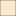

<!doctype html>
<html lang="en">
    <head>
        <meta charset="utf-8">
        <meta http-equiv="X-UA-Compatible" content="IE=edge">
        <meta name="viewport" content="initial-scale=1,user-scalable=no,maximum-scale=1,width=device-width">
        <meta name="mobile-web-app-capable" content="yes">
        <meta name="apple-mobile-web-app-capable" content="yes">
        <link rel="stylesheet" href="css/leaflet.css">
        <link rel="stylesheet" href="css/qgis2web.css"><link rel="stylesheet" href="css/fontawesome-all.min.css">
        <style>
        html, body, #map {
            width: 100%;
            height: 100%;
            padding: 0;
            margin: 0;
        }
        </style>
        <title></title>
    </head>
    <body>
        <div id="map">
        </div>
        <script src="js/qgis2web_expressions.js"></script>
        <script src="js/leaflet.js"></script>
        <script src="js/leaflet.rotatedMarker.js"></script>
        <script src="js/leaflet.pattern.js"></script>
        <script src="js/leaflet-hash.js"></script>
        <script src="js/Autolinker.min.js"></script>
        <script src="js/rbush.min.js"></script>
        <script src="js/labelgun.min.js"></script>
        <script src="js/labels.js"></script>
        <script src="data/LandParcelsWesfleur_1.js"></script>
        <script src="data/Servitudes_2.js"></script>
        <script src="data/Parks_3.js"></script>
        <script src="data/TSM_4.js"></script>
        <script>
        var highlightLayer;
        function highlightFeature(e) {
            highlightLayer = e.target;

            if (e.target.feature.geometry.type === 'LineString') {
              highlightLayer.setStyle({
                color: '#ffff00',
              });
            } else {
              highlightLayer.setStyle({
                fillColor: '#ffff00',
                fillOpacity: 1
              });
            }
        }
        var map = L.map('map', {
            zoomControl:true, maxZoom:28, minZoom:1
        }).fitBounds([[-33.5745307993855,18.488510997839974],[-33.55931139224791,18.515000668222818]]);
        var hash = new L.Hash(map);
        map.attributionControl.setPrefix('<a href="https://github.com/tomchadwin/qgis2web" target="_blank">qgis2web</a> &middot; <a href="https://leafletjs.com" title="A JS library for interactive maps">Leaflet</a> &middot; <a href="https://qgis.org">QGIS</a>');
        var autolinker = new Autolinker({truncate: {length: 30, location: 'smart'}});
        var bounds_group = new L.featureGroup([]);
        function setBounds() {
        }
        map.createPane('pane_OpenStreetMap_0');
        map.getPane('pane_OpenStreetMap_0').style.zIndex = 400;
        var layer_OpenStreetMap_0 = L.tileLayer('https://tile.openstreetmap.org/{z}/{x}/{y}.png', {
            pane: 'pane_OpenStreetMap_0',
            opacity: 1.0,
            attribution: '',
            minZoom: 1,
            maxZoom: 28,
            minNativeZoom: 0,
            maxNativeZoom: 19
        });
        layer_OpenStreetMap_0;
        map.addLayer(layer_OpenStreetMap_0);
        function pop_LandParcelsWesfleur_1(feature, layer) {
            layer.on({
                mouseout: function(e) {
                    for (i in e.target._eventParents) {
                        e.target._eventParents[i].resetStyle(e.target);
                    }
                },
                mouseover: highlightFeature,
            });
            var popupContent = '<table>\
                    <tr>\
                        <th scope="row">Land parcel No.</th>\
                        <td>' + (feature.properties['sl_land_pr'] !== null ? autolinker.link(feature.properties['sl_land_pr'].toLocaleString()) : '') + '</td>\
                    </tr>\
                    <tr>\
                        <th scope="row">Address No.</th>\
                        <td>' + (feature.properties['adr_no'] !== null ? autolinker.link(feature.properties['adr_no'].toLocaleString()) : '') + '</td>\
                    </tr>\
                    <tr>\
                        <th scope="row">Street Name</th>\
                        <td>' + (feature.properties['str_name'] !== null ? autolinker.link(feature.properties['str_name'].toLocaleString()) : '') + '</td>\
                    </tr>\
                    <tr>\
                        <th scope="row">Suburb</th>\
                        <td>' + (feature.properties['ofc_sbrb_n'] !== null ? autolinker.link(feature.properties['ofc_sbrb_n'].toLocaleString()) : '') + '</td>\
                    </tr>\
                    <tr>\
                        <th scope="row">Alternative Name</th>\
                        <td>' + (feature.properties['alt_name'] !== null ? autolinker.link(feature.properties['alt_name'].toLocaleString()) : '') + '</td>\
                    </tr>\
                    <tr>\
                        <th scope="row">Registered/Unregistered</th>\
                        <td>' + (feature.properties['lu_lgl_sts'] !== null ? autolinker.link(feature.properties['lu_lgl_sts'].toLocaleString()) : '') + '</td>\
                    </tr>\
                    <tr>\
                        <th scope="row">Property No.</th>\
                        <td>' + (feature.properties['prty_nmbr'] !== null ? autolinker.link(feature.properties['prty_nmbr'].toLocaleString()) : '') + '</td>\
                    </tr>\
                    <tr>\
                        <th scope="row">zoning</th>\
                        <td>' + (feature.properties['zoning'] !== null ? autolinker.link(feature.properties['zoning'].toLocaleString()) : '') + '</td>\
                    </tr>\
                    <tr>\
                        <th scope="row">Shape Length</th>\
                        <td>' + (feature.properties['shape_leng'] !== null ? autolinker.link(feature.properties['shape_leng'].toLocaleString()) : '') + '</td>\
                    </tr>\
                    <tr>\
                        <th scope="row">Area of Property</th>\
                        <td>' + (feature.properties['shape_area'] !== null ? autolinker.link(feature.properties['shape_area'].toLocaleString()) : '') + '</td>\
                    </tr>\
                </table>';
            layer.bindPopup(popupContent, {maxHeight: 400});
        }

        function style_LandParcelsWesfleur_1_0() {
            return {
                pane: 'pane_LandParcelsWesfleur_1',
                opacity: 1,
                color: 'rgba(97,31,0,1.0)',
                dashArray: '',
                lineCap: 'square',
                lineJoin: 'bevel',
                weight: 1.0,
                fillOpacity: 0,
                interactive: true,
            }
        }
        map.createPane('pane_LandParcelsWesfleur_1');
        map.getPane('pane_LandParcelsWesfleur_1').style.zIndex = 401;
        map.getPane('pane_LandParcelsWesfleur_1').style['mix-blend-mode'] = 'normal';
        var layer_LandParcelsWesfleur_1 = new L.geoJson(json_LandParcelsWesfleur_1, {
            attribution: '',
            interactive: true,
            dataVar: 'json_LandParcelsWesfleur_1',
            layerName: 'layer_LandParcelsWesfleur_1',
            pane: 'pane_LandParcelsWesfleur_1',
            onEachFeature: pop_LandParcelsWesfleur_1,
            style: style_LandParcelsWesfleur_1_0,
        });
        bounds_group.addLayer(layer_LandParcelsWesfleur_1);
        map.addLayer(layer_LandParcelsWesfleur_1);
        function pop_Servitudes_2(feature, layer) {
            layer.on({
                mouseout: function(e) {
                    for (i in e.target._eventParents) {
                        e.target._eventParents[i].resetStyle(e.target);
                    }
                },
                mouseover: highlightFeature,
            });
            var popupContent = '<table>\
                    <tr>\
                        <th scope="row">Start Date</th>\
                        <td>' + (feature.properties['bgn_date'] !== null ? autolinker.link(feature.properties['bgn_date'].toLocaleString()) : '') + '</td>\
                    </tr>\
                    <tr>\
                        <th scope="row">End Date</th>\
                        <td>' + (feature.properties['end_date'] !== null ? autolinker.link(feature.properties['end_date'].toLocaleString()) : '') + '</td>\
                    </tr>\
                    <tr>\
                        <th scope="row">Diagram No.</th>\
                        <td>' + (feature.properties['dgrm_no'] !== null ? autolinker.link(feature.properties['dgrm_no'].toLocaleString()) : '') + '</td>\
                    </tr>\
                    <tr>\
                        <th scope="row">Servitude No.</th>\
                        <td>' + (feature.properties['srvt_no'] !== null ? autolinker.link(feature.properties['srvt_no'].toLocaleString()) : '') + '</td>\
                    </tr>\
                    <tr>\
                        <th scope="row">Shape Area</th>\
                        <td>' + (feature.properties['shape_area'] !== null ? autolinker.link(feature.properties['shape_area'].toLocaleString()) : '') + '</td>\
                    </tr>\
                </table>';
            layer.bindPopup(popupContent, {maxHeight: 400});
        }

        function style_Servitudes_2_0() {
            return {
                pane: 'pane_Servitudes_2',
                opacity: 1,
                color: 'rgba(35,35,35,1.0)',
                dashArray: '',
                lineCap: 'butt',
                lineJoin: 'miter',
                weight: 1.0, 
                fill: true,
                fillOpacity: 1,
                fillColor: 'rgba(255,209,153,1.0)',
                interactive: true,
            }
        }
        map.createPane('pane_Servitudes_2');
        map.getPane('pane_Servitudes_2').style.zIndex = 402;
        map.getPane('pane_Servitudes_2').style['mix-blend-mode'] = 'normal';
        var layer_Servitudes_2 = new L.geoJson(json_Servitudes_2, {
            attribution: '',
            interactive: true,
            dataVar: 'json_Servitudes_2',
            layerName: 'layer_Servitudes_2',
            pane: 'pane_Servitudes_2',
            onEachFeature: pop_Servitudes_2,
            style: style_Servitudes_2_0,
        });
        bounds_group.addLayer(layer_Servitudes_2);
        map.addLayer(layer_Servitudes_2);
        function pop_Parks_3(feature, layer) {
            layer.on({
                mouseout: function(e) {
                    for (i in e.target._eventParents) {
                        e.target._eventParents[i].resetStyle(e.target);
                    }
                },
                mouseover: highlightFeature,
            });
            var popupContent = '<table>\
                    <tr>\
                        <th scope="row">park_name</th>\
                        <td>' + (feature.properties['park_name'] !== null ? autolinker.link(feature.properties['park_name'].toLocaleString()) : '') + '</td>\
                    </tr>\
                    <tr>\
                        <th scope="row">Street Name</th>\
                        <td>' + (feature.properties['acs_adr'] !== null ? autolinker.link(feature.properties['acs_adr'].toLocaleString()) : '') + '</td>\
                    </tr>\
                    <tr>\
                        <th scope="row">Park Area</th>\
                        <td>' + (feature.properties['shape_area'] !== null ? autolinker.link(feature.properties['shape_area'].toLocaleString()) : '') + '</td>\
                    </tr>\
                </table>';
            layer.bindPopup(popupContent, {maxHeight: 400});
        }

        function style_Parks_3_0() {
            return {
                pane: 'pane_Parks_3',
                opacity: 1,
                color: 'rgba(35,35,35,1.0)',
                dashArray: '',
                lineCap: 'butt',
                lineJoin: 'miter',
                weight: 1.0, 
                fill: true,
                fillOpacity: 1,
                fillColor: 'rgba(96,198,0,1.0)',
                interactive: true,
            }
        }
        map.createPane('pane_Parks_3');
        map.getPane('pane_Parks_3').style.zIndex = 403;
        map.getPane('pane_Parks_3').style['mix-blend-mode'] = 'normal';
        var layer_Parks_3 = new L.geoJson(json_Parks_3, {
            attribution: '',
            interactive: true,
            dataVar: 'json_Parks_3',
            layerName: 'layer_Parks_3',
            pane: 'pane_Parks_3',
            onEachFeature: pop_Parks_3,
            style: style_Parks_3_0,
        });
        bounds_group.addLayer(layer_Parks_3);
        map.addLayer(layer_Parks_3);
        function pop_TSM_4(feature, layer) {
            layer.on({
                mouseout: function(e) {
                    for (i in e.target._eventParents) {
                        e.target._eventParents[i].resetStyle(e.target);
                    }
                },
                mouseover: highlightFeature,
            });
            var popupContent = '<table>\
                    <tr>\
                        <th scope="row">TSM Name</th>\
                        <td>' + (feature.properties['pnt'] !== null ? autolinker.link(feature.properties['pnt'].toLocaleString()) : '') + '</td>\
                    </tr>\
                    <tr>\
                        <th scope="row">Y coordinate(m)</th>\
                        <td>' + (feature.properties['y_wgs_84'] !== null ? autolinker.link(feature.properties['y_wgs_84'].toLocaleString()) : '') + '</td>\
                    </tr>\
                    <tr>\
                        <th scope="row">X coorxdinate(m)</th>\
                        <td>' + (feature.properties['x_wgs_84'] !== null ? autolinker.link(feature.properties['x_wgs_84'].toLocaleString()) : '') + '</td>\
                    </tr>\
                    <tr>\
                        <th scope="row">Height(m)</th>\
                        <td>' + (feature.properties['hght'] !== null ? autolinker.link(feature.properties['hght'].toLocaleString()) : '') + '</td>\
                    </tr>\
                </table>';
            layer.bindPopup(popupContent, {maxHeight: 400});
        }

        function style_TSM_4_0() {
            return {
                pane: 'pane_TSM_4',
                radius: 0.6,
                opacity: 1,
                color: 'rgba(128,17,25,1.0)',
                dashArray: '',
                lineCap: 'butt',
                lineJoin: 'miter',
                weight: 2.0,
                fill: true,
                fillOpacity: 1,
                fillColor: 'rgba(219,30,42,0.4549019607843137)',
                interactive: true,
            }
        }
        map.createPane('pane_TSM_4');
        map.getPane('pane_TSM_4').style.zIndex = 404;
        map.getPane('pane_TSM_4').style['mix-blend-mode'] = 'normal';
        var layer_TSM_4 = new L.geoJson(json_TSM_4, {
            attribution: '',
            interactive: true,
            dataVar: 'json_TSM_4',
            layerName: 'layer_TSM_4',
            pane: 'pane_TSM_4',
            onEachFeature: pop_TSM_4,
            pointToLayer: function (feature, latlng) {
                var context = {
                    feature: feature,
                    variables: {}
                };
                return L.circleMarker(latlng, style_TSM_4_0(feature));
            },
        });
        bounds_group.addLayer(layer_TSM_4);
        map.addLayer(layer_TSM_4);
        var baseMaps = {};
        L.control.layers(baseMaps,{' TSM': layer_TSM_4,' Parks ': layer_Parks_3,' Servitudes': layer_Servitudes_2,' Land Parcels Wesfleur': layer_LandParcelsWesfleur_1,"OpenStreetMap": layer_OpenStreetMap_0,},{collapsed:false}).addTo(map);
        setBounds();
        </script>
    </body>
</html>
